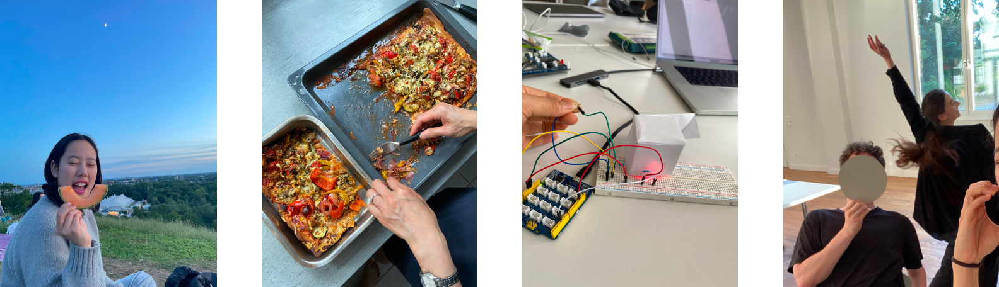

Contact
junahan1222@gmail.com
+49 173 7455 762
Supervised by
The little voice in my head that says, ‘You got this!’
Summary
In case the time-lapse MP4 that you clicked on was too fast (it was too fast for me), allow me to give a recap: Hello or 안녕하세요! My name is Juna. I love designing for future scenarios where cars are made alive, an egg talks to you or pixels are made 3D (yes, these are my projects). But why? The answer is to make people’s lives easier, more fun, and ultimately, to bring joy to people. This is my way of serving the world and the people living in it; for me, designing is loving. On a more technical side, my interests lie in industrial design, UX design / engineering and transportation design. My goal is to create experiences, whether in the form of products or services, that are empathetic, thoughtful, helpful, impactful, and sustainable. Thank you for visiting my website and I hope you enjoy!
Fun facts
In my free time, I love reading, drawing portraits, taking photos, visiting galleries, going on walks or cafe dates with friends, and learning new Italian recipes. ☺